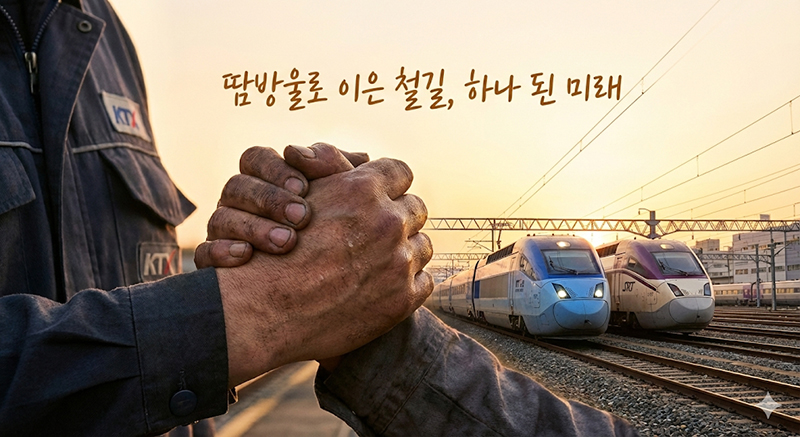
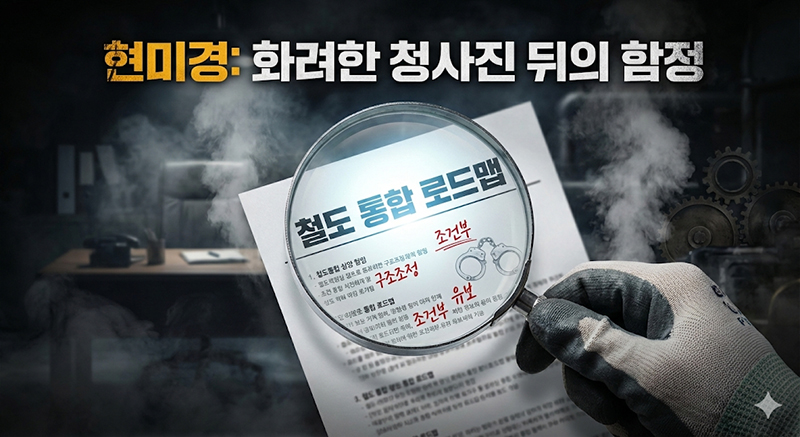

통합 로드맵 발표는 단결의 승리... 성과급 정상화 해결 전까지 긴장 놓지 말아야
사랑하는 조합원 동지 여러분.
우리가 해냈습니다. 그토록 요지부동이던 국토교통부가 드디어 고속철도 통합을 향한 발걸음을 떼겠다고 발표했습니다. 12월 8일 국토부는 2026년 말까지 코레일과 SR을 통합하겠다, 즉 이원화된 고속철도를 하나로 합치겠다는 로드맵을 세상에 내놓았습니다. 이는 철도노동자가 10년 넘게 외쳐온 철도 공공성 강화와 국민 편익 증진의 정당성을 정부 스스로 인정한 것입니다.
전국철도노동조합은 즉각 환영 성명을 발표했습니다. 이것은 단순히 정부의 시혜가 아닙니다. 파업을 불사하겠다는 3만 조합원의 결기, 그리고 압도적인 파업 찬성으로 지도부에 힘을 실어준 동지 여러분의 뜨거운 단결력이 정부의 콧대를 꺾어버린 위대한 성과입니다. 현장을 지키며 묵묵히 땀 흘려온 조합원 동지 여러분께 깊은 존경과 감사의 인사를 드립니다. 여러분이 이 거대한 변화를 만들었습니다.
하지만 동지 여러분, 우리는 승리의 기쁨을 잠시 누리되, 냉철한 이성으로 지금의 상황을 직시해야 합니다. 통합이라는 큰 산을 넘은 것은 분명하지만, 우리가 목표한 종착역까지는 아직 넘어야 할 고비들이 남아 있기 때문입니다.
우선, 정부가 발표한 보도자료를 꼼꼼히 들여다볼 필요가 있습니다. 통합의 방향성은 환영할 일이나, 그 과정에 깔린 단서 조항들은 여전히 우리에게 합리적 의심을 갖게 합니다. 정부는 통합 시점을 2026년 말로 제시하면서도, 이해당사자 간 이견 조정이 어렵거나 법정 절차 추진 과정에서 지연될 경우 기관통합 일정은 변동될 수 있다는 여지를 남겼습니다. 과거 수차례 말을 바꾸었던 정부의 전력을 기억하는 우리로서는, 혹여 이 문구가 시간을 끌기 위한 면피용 장치가 되지는 않을지 우려를 거둘 수 없습니다. 그렇기에 우리는 정부가 이 약속을 성실히 이행하는지 두 눈 부릅뜨고 감시해야 합니다.
무엇보다, 우리의 생존권과 직결된 핵심 과제는 여전히 해결되지 않았습니다. 우리가 총파업을 결의한 이유는 단지 통합 때문만은 아니었습니다. 기획재정부의 부당한 지침으로 15년간 타 공기업 대비 기본급의 80%만 적용받아온 성과급 차별을 철폐하는 것이 우리의 절박한 요구였습니다.
지금 이 순간에도 기획재정부는 감사원 지적을 핑계로 성과급 정상화 약속을 이행하지 않고 있습니다. 통합이 이루어진다 해도, 정당한 노동의 대가를 받지 못하는 상황이 온다면 그것을 진정한 승리라 부를 수 있겠습니까?

사랑하는 조합원 동지 여러분.
정부가 통합 카드를 내밀었다고 해서 우리의 투쟁이 끝난 것은 아닙니다. 오히려 지금부터가 진짜 싸움일지도 모릅니다. 정부가 내민 손이 화해의 손길인지, 아니면 파업 대오를 흐트러뜨리기 위한 교란책인지는 오직 우리의 흔들림 없는 태세에 달려 있습니다. 우리가 여기서 긴장을 풀고 흩어진다면, 정부는 약속했던 통합 로드맵을 차일피일 미루고 성과급 문제를 묵살할지도 모릅니다.
우리는 조건부 승리에 만족할 수 없습니다. 성과급의 온전한 회복, 그리고 되돌릴 수 없는 완전한 철도 통합이 이루어지는 그날까지 우리는 하나 된 대오를 유지해야 합니다.
오는 12월 11일 오전 9시. 파업 돌입 예정 시각이 며칠 앞으로 다가왔습니다. 중앙쟁의대책위원회는 정부의 태도 변화와 교섭 상황을 면밀히 주시하며 최선의 판단을 내릴 것입니다. 현장의 조합원 동지들은 각종 유언비어나 섣부른 낙관론에 동요하지 말고, 오직 지부와 중앙의 지침에 따라주십시오.
우리가 보여준 단결력이 정부를 움직였습니다. 그 힘을 믿고 끝까지 함께합시다. 우리가 멈추면 세상이 멈춘다는 사실을, 그리고 투쟁하는 노동자만이 자신의 권리와 미래를 지킬 수 있다는 진리를 다시 한번 가슴에 새깁시다.
전국철도노동조합 고양고속차량지부
목차로 돌아가기